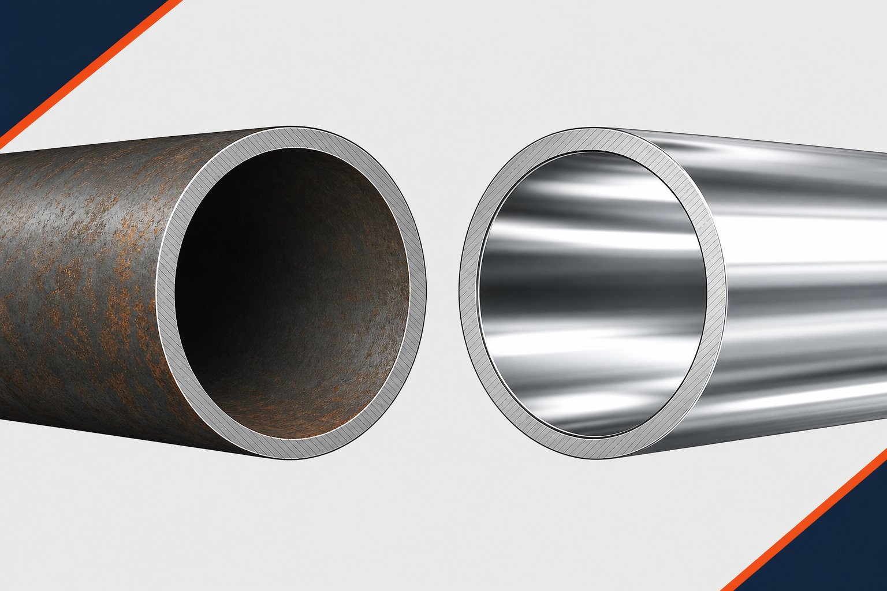

چرا این انتخاب اهمیت دارد؟
متریال لوله یکی از اولین و سرنوشتسازترین تصمیمهای هر خط است؛ چون عمر، ایمنی و هزینه نگهداری را برای دههها تعیین میکند. لوله کربنی و استنلس دو قطب اصلی این انتخاباند: یکی با اقتصاد و استحکام، دیگری با مقاومت ذاتی در برابر خوردگی.

مقاومت به خوردگی؛ نقطه تمایز اصلی
لوله استنلس حداقل ده و نیم درصد کروم دارد که لایه اکسیدی نازک، چسبنده و خودترمیمشونده روی سطح ایجاد میکند. این لایه، فلز را در برابر رطوبت و بسیاری از مواد شیمیایی محافظت میکند. لوله کربنی چنین لایهای ندارد و بدون پوشش یا حفاظت کاتدی، در محیط مرطوب زنگ میزند.
جدول مقایسه جامع
| معیار | لوله کربنی | لوله استنلس |
|---|---|---|
| مقاومت به خوردگی | نیازمند پوشش یا حفاظت | ذاتی و بالا |
| استحکام مکانیکی | بالا | قابل مقایسه تا بالا |
| تحمل دمای بالا | خوب تا بسیار خوب | خوب تا عالی (بسته به گرید) |
| بهداشت و تمیزی | محدود | عالی؛ مناسب صنایع غذایی و دارویی |
| هزینه خرید | پایین | چند برابر کربنی |
| هزینه چرخه عمر در سرویس خورنده | بالا (نگهداری مکرر) | معمولاً پایینتر |
| جوشکاری | ساده | نیازمند مهارت و تمیزی بیشتر |
| مغناطش | معمولاً مغناطیسی | آستنیتیها معمولاً غیرمغناطیسی |
اقتصاد چرخه عمر
قیمت خرید کربنی جذابتر است؛ اما در سرویس خورنده، هزینه پوششدهی، بازرسیهای دورهای، تعمیر و تعویض زودهنگام میتواند برتری اولیه را از بین ببرد. در طرف مقابل، استفاده از استنلس در سرویس غیرخورنده اغلب هزینه بیمورد است. تحلیل درست، جمع هزینه خرید و نگهداری در عمر طراحی خط است.
معیارهای انتخاب
- ماهیت سیال: خورنده، خنثی یا بهداشتی؟
- دمای کاری: گریدهای آلیاژی یا استنلس برای دماهای خاص.
- الزامات بهداشتی صنایع غذایی و دارویی.
- محیط نصب: ساحلی، مرطوب یا صنعتی.
- بودجه خرید در برابر هزینه نگهداری بلندمدت.
استانداردهای رایج هر خانواده
| خانواده | استانداردهای رایج | کاربرد |
|---|---|---|
| کربنی دمای بالا | لوله بدون درز کربنی | خطوط فرایندی و بخار |
| کربنی دمای پایین | لوله مخصوص سرویس زیر صفر | خطوط برودتی و هوای سرد |
| خط انتقال | استاندارد لوله خط انتقال | خطوط نفت و گاز |
| استنلس آستنیتی | استاندارد لوله استنلس | سرویس خورنده و بهداشتی |
انتخاب استاندارد باید با دمای طراحی، فشار و ماهیت سیال هماهنگ باشد.
بازرسی ورودی و مستندسازی انتخاب
فارغ از اینکه انتخاب نهایی شما لوله کربن استیل است یا استینلس استیل، دو اقدام مشترک وجود دارد که کیفیت خرید شما را تضمین میکنند: بازرسی ورودی دقیق و مستندسازی فرایند انتخاب. در بازرسی ورودی، اولین قدم تطبیق علامتگذاری روی لولهها با مدارک آزمون کارخانه است؛ هر شاخه لوله باید گرید، استاندارد، سایز، رده و نام یا علامت سازنده را داشته باشد و این اطلاعات باید با گواهی تحویلی همخوانی داشته باشند. برای لولههای کربن استیل، کنترل چشمی وضعیت سطح، زنگزدگی عمیق، آسیب لبهها و وضعیت پوشش محافظ اهمیت دارد، چون زنگزدگی سطحی در انبار اگر کنترل نشود، به سرعت به عمق نفوذ میکند. برای لولههای استینلس، کنترل تمیزی سطح، آسیبهای مکانیکی و جداسازی از کربن استیل در انبار اهمیت بیشتری دارد، چون تماس با ذرات آهن و آلودگی سطحی، مقاومت خوردگی را به طور موضعی از بین میبرد. اندازهگیری ابعاد شامل قطر خارجی، ضخامت در چند نقطه و طول شاخهها باید با ابزار کالیبره و بر اساس تلرانس استاندارد مربوطه انجام و نتایج ثبت شود. در مستندسازی انتخاب، هدف این است که چند سال بعد، هر کسی بتواند بفهمد چرا این گرید برای این نقطه انتخاب شد. یک برگه تصمیم ساده شامل شرایط سرویس، دما و فشار، عامل خوردگی اصلی، گزینههای بررسیشده و دلیل انتخاب نهایی، کافی است؛ اما همین برگه ساده، در زمان تعمیرات، تغییر فرایند یا بروز خرابی، ارزش خود را چند برابر نشان میدهد. در پروژههایی که چند گرید همزمان استفاده میشود، یک جدول مرجع رنگبندی و محل کاربرد هر گرید تهیه و به تیمهای اجرا ابلاغ کنید تا از جابجایی اشتباه در نصب جلوگیری شود. رویه حرفهای این است که خرید، بازرسی و انتخاب، سه حلقه یک زنجیره مستند باشند؛ اگر هر حلقه به تنهایی کامل باشد اما حلقههای دیگر مستند نباشند، کل سیستم در زمان نیاز قابل دفاع نخواهد بود.
جمعبندی
بین کربنی و استنلس، انتخاب هوشمندانه آن است که با سیال و اقتصاد چرخه عمر هماهنگ باشد؛ نه ارزانترین در فاکتور خرید. با ارائه شرایط سرویس، متریال دقیق و مقرونبهصرفه برای پروژه شما پیشنهاد میشود.
سوالات رایج
مهمترین تفاوت این دو لوله چیست؟
مقاومت به خوردگی. لوله استنلس به دلیل وجود کروم، لایه اکسیدی محافظ خودترمیمشونده دارد و در محیطهای مرطوب و خورنده دوام میآورد؛ لوله کربنی بدون پوشش در برابر زنگزدگی آسیبپذیر است.
آیا استنلس همیشه انتخاب بهتری است؟
خیر. در سرویسهای غیرخورنده، لوله کربنی با پوشش مناسب سالها خدمت میکند و هزینه آن بخشی از استنلس است. انتخاب باید بر اساس سیال، دما و اقتصاد چرخه عمر انجام شود.
کجا حتماً باید استنلس استفاده کرد؟
سرویسهای خورنده شیمیایی، محیطهای ساحلی و مرطوب، صنایع غذایی و دارویی با الزام بهداشت، و هر جا که زنگزدگی میتواند محصول یا ایمنی را تهدید کند.
آیا اتصال مستقیم این دو به هم مشکلساز است؟
بله؛ اتصال مستقیم کربنی و استنلس در حضور الکترولیت میتواند باعث خوردگی گالوانیکی شود. باید از عایقبندی مناسب بین فلزی یا اتصالات واسط مناسب استفاده شود.
مطالب مرتبط
- راهنمای لوله استنلس (ASTM A312)
- مقایسه لوله استنلس ۳۰۴ و ۳۱۶
- راهنمای جامع لوله مانیسمان
- راهنمای جنس و متریال فلنج صنعتی
- راهنمای تست شناسایی مثبت متریال
با ارائه سیال، دما و فشار طراحی، متریال مناسب (کربنی، آلیاژی یا استنلس با گرید مشخص) به همراه مدارک کامل پیشنهاد میشود.
مشاهده صفحه محصول ← ثبت RFQ همین محصولتامین این تجهیزات را به پیشرو تجهیز فرتاک بسپارید
شرکت پیشرو تجهیز فرتاک تامینکننده تخصصی تجهیزات صنعتی برای پروژههای نفت، گاز، پتروشیمی، فولاد و نیروگاهی است. برای دریافت پیشنهاد فنی و قیمت، استعلام (RFQ) خود را ثبت کنید تا کارشناسان مهندسی فروش در کوتاهترین زمان پاسخ دهند.
- تامین لوله کربنی و استنلسهر دو خانواده با گواهی مواد و نتایج تست
- تامین تجهیزات پایپینگاتصالات و فلنج همجنس با متریال خط